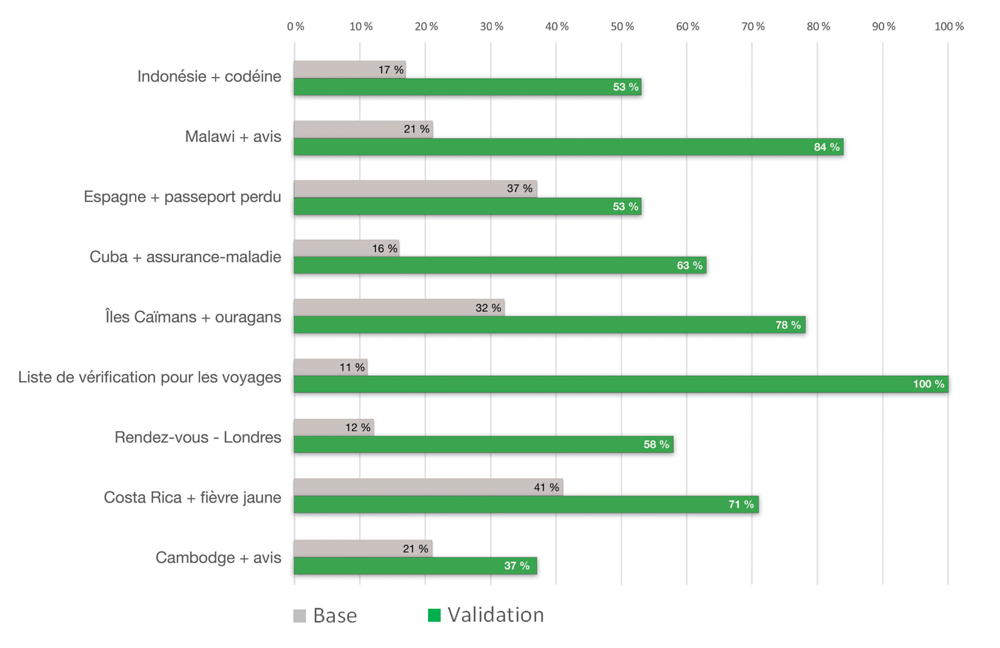

Résumé de recherche : Conseils aux voyageurs et avertissements
Le projet d’optimisation des conseils et des avertissements aux voyageurs a été mis en œuvre de janvier à mars 2019. L’objectif était de permettre aux Canadiens de trouver et de comprendre plus facilement les conseils et les avis aux voyageurs disponibles sur Canada.ca. L’équipe de projet était codirigée par le Bureau de la transformation numérique (BTN) du Secrétariat du Conseil du Trésor et Affaires mondiales Canada (AMC).
Les partenaires d’AMC ont également participé à la diffusion de contenu sur les voyages :
- Immigration, Réfugiés et Citoyenneté Canada (IRCC)
- Agence de la santé publique du Canada (ASPC)
- Santé Canada (SC)
- Agence des services frontaliers du Canada (ASFC)
Ce qui a singularisé ce projet
Accès mobile
Les analyses nous ont indiqué que les Canadiens utilisent de plus en plus leurs appareils mobiles pour accéder aux renseignements sur les voyages sur Canada.ca. Pour cette raison, les tests de référence et de prototype ont porté sur l’utilisation des appareils mobiles. Les participants au test ont utilisé leur propre appareil ou ont redimensionné leur navigateur de bureau pour simuler une interface mobile.
Communiquer les risques
Les déplacements comportent un certain degré de risque. La plupart des voyageurs prennent des précautions de routine contre des risques qui leurs sont familiers, comme le vol ou les blessures. Le gouvernement du Canada ne peut pas empêcher les Canadiens de voyager vers les destinations à risque élevé, mais il a l’obligation de les protéger contre les dangers. Nous informons les Canadiens lorsqu’ils devraient modifier leur comportement habituel ou tout simplement éviter de voyager pour rester en sécurité. Il est essentiel que nous concevions des pages Web qui présentent clairement et succinctement la nature et le niveau des risques. Pour ce faire, l’équipe de projet a conçu un nouveau modèle de page pour les destinations. La conception priorise les risques « qu’il faut connaître » à l’aide d’un nouveau modèle d’alerte et d’une courte liste de points importants soigneusement organisée.
Encourager les gens à examiner à la fois les conseils génériques et ceux particuliers à la destination
La section Voyages de Canada.ca contient de nombreuses pages qui donnent des conseils généraux. On peut y trouver des conseils sur les documents de voyage, les voyages avec des enfants ou des animaux de compagnie, l’assurance voyage et les vaccins. Souvent, les pages d’une destination en particulier reproduisaient ce contenu. Les tests ont révélé un enjeu persistant, à savoir qu’il était habituel que les gens ayant trouvé des conseils généraux supposent disposer de toute l’information nécessaire pour prendre des décisions sur les déplacements. Ils ne remarquaient pas les conseils essentiels sur la destination en particulier. Pour régler ce problème, nous avons supprimé les conseils « généraux » en double des pages de la destination en particulier. Nous avons plutôt ajouté des liens vers ces conseils. Nous avons également regroupé le contenu différemment dans la zone de navigation. Nous avons accru la visibilité de sujets comme « Planification de votre voyage » et ajouté une liste de vérification « Avant de partir ». Ces changements ont aidé les gens à naviguer plus efficacement entre les deux types de conseils.

Établir une base de référence
Dans l’étude de référence, 19 voyageurs canadiens ont effectué 147 tests sur les pages de voyage de Canada.ca. Le taux de réussite global était de 23 %.
Les problèmes les plus fréquemment rencontrés par les participants étaient les suivants :
- ne pas comprendre les différences (parfois subtiles) entre les conseils, les avertissements et les avis;
- ne pas comprendre les différents niveaux ou types de risques liés aux voyages — sécurité, santé et sûreté — et leur importance pour la planification des voyages;
- « se sentir satisfait » en répondant à la question de la tâche avec de l’information qui semblait assez proche d’une réponse, même si elle était incomplète ou inexacte;
- ne pas trouver de réponses publiées sous une rubrique où les gens ne pensaient pas à chercher; (par exemple, des conseils sur les médicaments illégaux placés dans « Lois et culture », mais non dans « Santé »)
- des rubriques qui ont agi comme des « aimants nocifs », suggérant un contenu qui n’a pas fourni la réponse; (par exemple : une requête du type « Comment nous aidons », qui mène à des profils d’agents consulaires plutôt qu’à des renseignements sur les services offerts aux voyageurs canadiens)
- des longues pages de texte dense qui ne permettent pas un survol, ce qui fait qu’il est facile de manquer des détails cruciaux;
- des tâches exigeant des connaissances préalables, comme savoir que Londres, en Angleterre, se trouve au Royaume-Uni.
Conception en vue de la réussite des utilisateurs
Des ateliers intensifs avec l’équipe élargie du projet nous ont aidés à livrer un prototype avec des améliorations importantes. Voici quelques-unes de ces mesures :
- une architecture d’information de voyage révisée, comportant moins de sujets et plus de libellés axés sur les tâches pour améliorer l’aspect de l’information; (par exemple, « Planifier votre voyage » au lieu de « Voyager à l’étranger »)
- une relation plus uniforme entre les libellés de sujet parents et leurs sous-sujets;
- une approche de type « filet de sécurité » pour la conception du contenu; (par exemple, les renseignements sur les médicaments illégaux — qui peuvent mener à l’arrestation et à l’emprisonnement dans certains pays — sont mis en évidence comme un « point important » décrit en détail dans « Lois et culture » et fait l’objet de renvois dans « Santé > Médicaments »)
- des pages faciles à lire et à survoler sur des sujets critiques et des situations courantes nécessitant de l’aide;
- de nombreux en-têtes, listes à puces et liens de navigation « sur cette page »;
- une conversion de l’extrêmement utile liste de vérification de voyage d’une publication (souvent manquée par les participants) à une page Web bien en vue;
- un répertoire de destination révisé mettant en évidence les destinations à risque élevé; (celles arborant des avertissements « ne pas voyager » ou « éviter les voyages non essentiels »;
- une fonction de recherche de destination révisée qui permet la recherche par d’autres noms de lieux;
- un modèle de page reconçu pour les destinations, remplaçant la page à plusieurs onglets par une seule page avec des liens de navigation « sur cette page »;
- les coordonnées et les renseignements sur les services propres à la destination placés plus en évidence sur les pages des destinations.
Mesure des taux de réussite du nouveau prototype
L’équipe a mis à l’essai le prototype remanié avec un nouvel ensemble de 19 voyageurs canadiens. Elle a effectué 146 essais des mêmes scénarios de tâches que dans les tests de référence. Notre objectif était soit d’atteindre un taux de réussite de 80 % soit d’obtenir une amélioration d’au moins 20 points par rapport au pointage de référence. Les taux de repérage ont augmenté de 49 % à 88 % (+ 39 %) après révision du contenu et du design. La réussite globale des tâches est passée de 23 % à 72 % (+ 49 %).
Ce graphique présente une comparaison des taux de réussite des tâches entre les tests de référence et les tests de validation pour l’ensemble des 38 participants.
Taux de réussite des tâches – tableau
| Tâche | Base | Validation |
|---|---|---|
| Indonésie + codéine | 17 % | 53 % |
| Malawi + avis | 21 % | 84 % |
| Espagne + passeport perdu | 37 % | 53 % |
| Cuba + assurance-maladie | 16 % | 63 % |
| Îles caïmans + ouragans | 32 % | 78 % |
| Liste de vérification pour les voyages | 11 % | 100 % |
| Rendez-vous - Londres | 12 % | 58 % |
| Costa Rica + fièvre jaunce | 41 % | 71 % |
| Cambodge + avis | 21 % | 37 % |
Principaux facteurs de réussite
Voici les caractéristiques du prototype qui ont eu la plus grande incidence sur les taux de réussite :
- des rubriques simples, informatives et axées sur les tâches : « Planifier votre voyage », « Avant de partir », « Lorsque les choses tournent mal »;
- une conception de page pour les destinations où les renseignements essentiels se démarquent, où les détails à l’appui sont pertinents et où des détails supplémentaires sont liés au lieu d’être reproduits;
- des pages de contenu faciles à survoler, avec des rubriques claires et nombreuses, des listes à puces et seulement des liens essentiels.
Demander les résultats de recherche
Si vous souhaitez voir les conclusions de recherche détaillés de ce projet, envoyez-nous un courriel à dto.btn@tbs-sct.gc.ca.
Dites-nous ce que vous en pensez
Envoyez un gazouillis en utilisant le mot-clic #Canadapointca.
Pour en savoir plus
- Lisez notre billet de blogue : Conseils de conception de contenu tirés de nos projets d’optimisation du contenu « Conseils aux voyageurs et avertissements » et « Communiquer avec l’ARC »
- Consultez les aperçus de nos autres projets avec nos partenaires